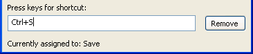

You can associate your own keyboard shortcuts with PowerBuilder menu items. For example, if you have used another debugger, you may be accustomed to using specific function keys or key combinations to step into and over functions. You can change the default keyboard shortcuts to associate actions in PowerBuilder's Debugger with the keystrokes you are used to.
 Tip Creating keyboard shortcuts means you can use the keyboard
instead of the mouse in many common situations, including changing
workspaces, objects, or connections. To do this, create shortcuts
for the File>Recent menu items.
Tip Creating keyboard shortcuts means you can use the keyboard
instead of the mouse in many common situations, including changing
workspaces, objects, or connections. To do this, create shortcuts
for the File>Recent menu items.
 To associate a keyboard shortcut with a menu item:
To associate a keyboard shortcut with a menu item:
Select Tools>Keyboard Shortcuts from the menu bar.
The keyboard shortcuts for the current menu bar display.
Select a menu item with no shortcut or a menu item with a default shortcut that you want to change and then put the cursor in the Press Keys For Shortcut box.
Press the keys you want to use for the shortcut.
The new shortcut displays in the text box. If you type a shortcut that is already being used, a message notifies you so you can type a different shortcut or change the existing shortcut.

 To remove a keyboard shortcut associated with
a menu item:
To remove a keyboard shortcut associated with
a menu item:
Select Tools>Keyboard Shortcuts from the menu bar.
Select the menu item with the shortcut you want to remove.
Click Remove.
You can reset keyboard shortcuts to the default shortcuts globally or for the current painter only.
 To reset keyboard shortcuts to the default:
To reset keyboard shortcuts to the default:
Click the Reset button and respond to the prompt.